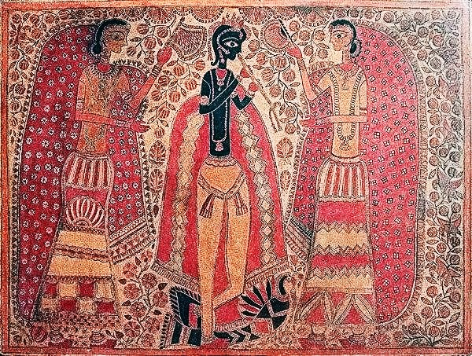
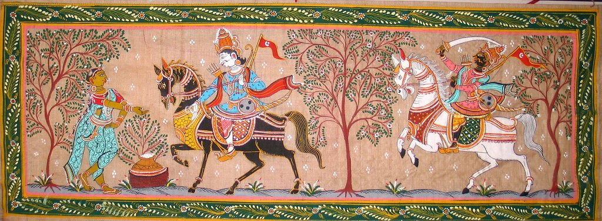
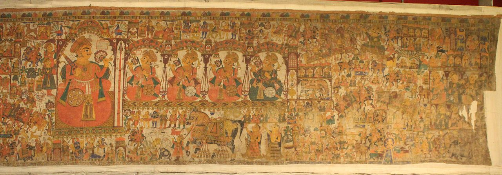
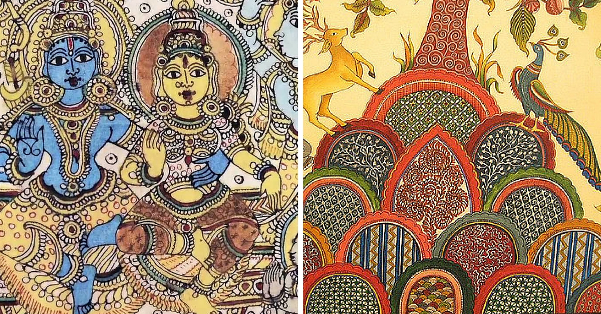
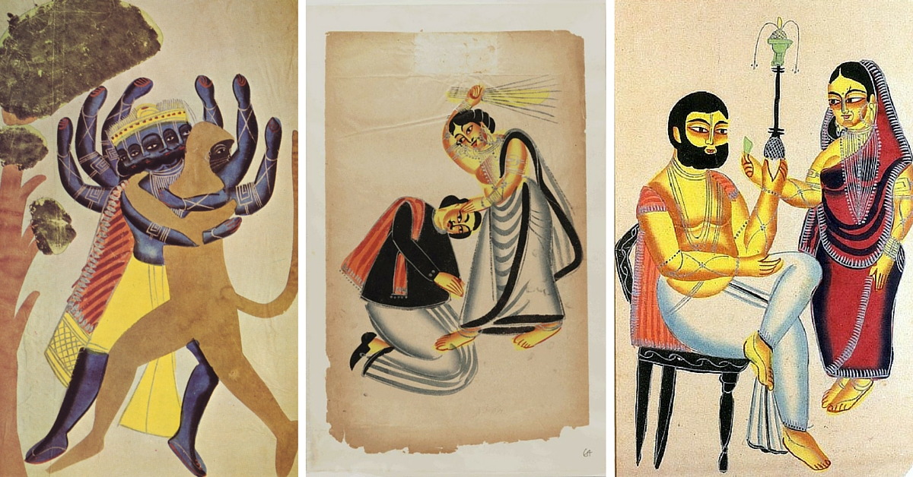
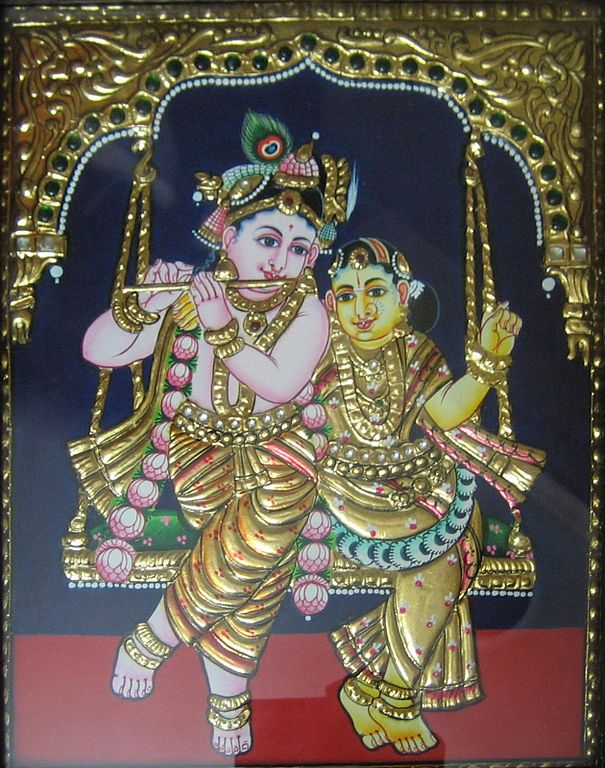
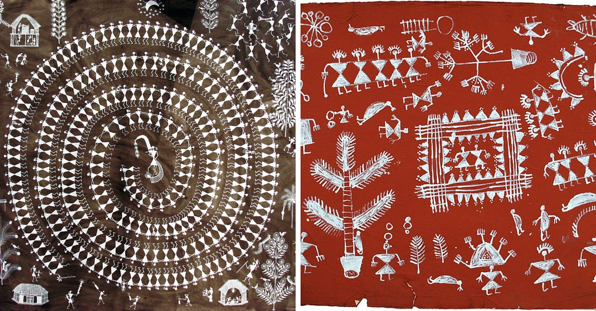
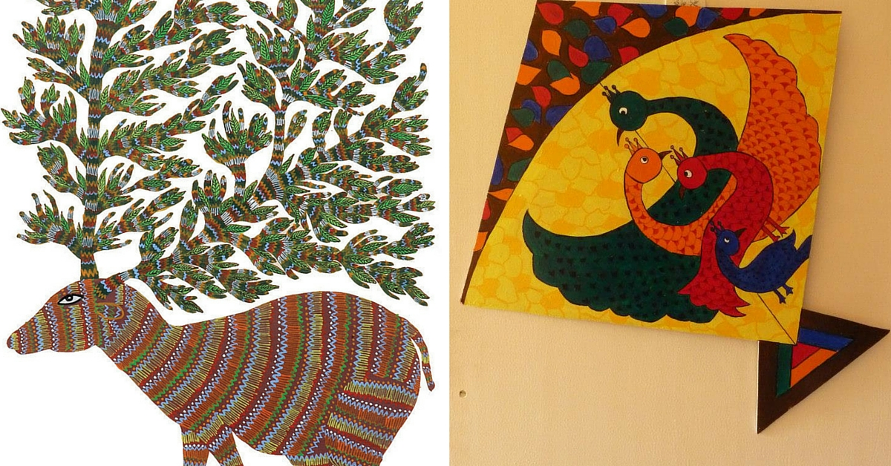

.jpg)
India had always been known as the land that portrayed cultural and traditional vibrancy through its conventional arts and crafts.
The 35 states and union territories sprawled across the country have their own distinct cultural and traditional identities,
and are displayed through various forms of art prevalent there. Every region in India has its own style and pattern of art, which is known as folk art.
Other than folk art, there is yet another form of traditional art practiced by several tribes or rural population,
which is classified as tribal art. The folk and tribal arts of India are very ethnic and simple,
and yet colorful and vibrant enough to speak volumes about the country's rich heritage.
Folk art in India apparently has a great potential in the international market because of its traditional aesthetic sensibility and authenticity.
The rural folk paintings of India bear distinctive colorful designs, which are treated with religious and mystical motifs. Some of the most famous folk paintings of India
are the Madhubani paintings of Bihar, Patachitra paintings from the state of Odisha, the Nirmal paintings of Andhra Pradesh, and other such folk art forms.
Folk art is however not restricted only to paintings, but also stretches to other art forms such as pottery, home decorations, ornaments, cloths-making, and so on.
In fact, the potteries of some of the regions of India are quite popular among foreign tourists because of their ethnic and traditional beauty.
|  | |
 |
| Madhubani | Miniature Paintings | Pattachitra |
|  |  |  |
| Phad | Kalamkari | Kalighat |
|  |  |  |
| Tanjore | Warli Paintings | Gond Paintings |
Madhubani painting, also referred to as Mithila Art (as it flourishes in the Mithila region of Bihar), is characterized by line drawings filled in by bright colours and contrasts or patterns. This style of painting has been traditionally done by the women of the region, though today men are also involved to meet the demand. These paintings are popular because of their tribal motifs and use of bright earthy colours. These paintings are done with mineral pigments prepared by the artists. The work is done on freshly plastered or a mud wall.
The art of Miniature painting was introduced to the land of India by the Mughals, who brought the much-revealed art form from Persia. In the sixteenth century, the Mughal ruler Humayun brought artists from Persia, who specialized in miniature painting. The succeeding Mughal Emperor, Akbar built an atelier for them to promote the rich art form. These artists, on their part, trained Indian artists who produced paintings in a new distinctive style, inspired by the royal and romantic lives of the Mughals. The particular miniature produced by Indian artists in their own style is known as Rajput or Rajasthani miniature. During this time, several schools of painting evolved, such as Mewar (Udaipur), Bundi, Kotah, Marwar (Jodhpur), Bikaner, Jaipur, and Kishangarh.
Pattachitra style of painting is one of the oldest and most popular art forms of Odisha. The name Pattachitra has evolved from the Sanskrit words patta, meaning canvas, and chitra, meaning picture. Pattachitra is thus a painting done on canvas, and is manifested by rich colourful application, creative motifs and designs, and portrayal of simple themes, mostly mythological in depiction. Some of the popular themes represented through this art form are Thia Badhia - depiction of the temple of Jagannath; Krishna Lila - enactment of Jagannath as Lord Krishna displaying his powers as a child; Dasabatara Patti - the ten incarnations of Lord Vishnu; Panchamukhi - depiction of Lord Ganesh as a five-headed deity.
Originating in Rajasthan, Phad is mainly a religious form of scroll painting depicting folk deities Pabuji or Devnarayan. The 30- or 15 feet-long canvas or cloth that it is painted on is called phad. Vegetable colours and a running narrative of the lives and heroic deeds of deities characterise these paintings.
Literally meaning ‘drawings with a pen’, Kalamkari is of two types in India: Machilipatnam, which originates from Machilipatnam in Andhra Pradesh and Srikalahasti, which originates from Chitoor in the same state. While the former refers to block-printed form of art, the latter is a free flowing art with a pen on fabric. Today, Kalamkari art is used on sarees and ethnic clothing, and depicts anything from flora and fauna to epics such as Mahabharata or Ramayana.
A recently discovered painting style, it originated in the 19th century Bengal, from Kalighat. It was the time when upheaval against the British was a possible, exciting idea. These paintings, on cloth and pattas, at first depicted Gods and Goddesses, but then took a turn towards social reform. With cheap paper and paint colours, squirrel hair brushes and colour pigments, the art was characterised by flawless strokes, brushwork, and simple but bold drawings. It sought to raise awareness about social conditions in its viewers – rich zamindars were depicted drinking wine with women, while priests were shown with ‘unchaste’ women and police babus being sloppy.
Folk art is linked with the forgotten art of story telling. Paintings are used to depict the visual counterpoint in narration in every region of India. Art forms of Rajasthan, Gujarat and Bengal narrate the myths and legends of local heroes and deities and construct a kaleidoscopic image of our glorious past and rich cultural heritage. Each work is a complete narration in itself, giving us a glimpse of the past, which has been kept alive by talent and devotion of our artists.
Maharashtra is known for its Warli folk paintings. Warli is the name of the largest tribe found on the northern outskirts of Mumbai, in Western India. Despite being in such close proximity of the largest metropolis in India, Warli tribesmen shun all influences of modern urbanization. Warli Art was first discovered in the early seventies. While there are no records of the exact origins of this art, its roots may be traced to as early as the 10th century A.D. Warli is the vivid expression of daily and social events of the Warli tribe of Maharashtra, used by them to embellish the walls of village houses. This was the only means of transmitting folklore to a populace not acquainted with the written word. This art form is simple in comparison to the vibrant paintings of Madhubani.
Characterised by a sense of belonging with nature, the Gondi tribe in Madhya Pradesh created these bold, vibrantly coloured paintings, depicting mainly flora and fauna. The colours come from charcoal, cow dung, leaves and coloured soil. If you look closely, it is made up of dots and lines. Today, these styles are imitated, but with acrylic paints. It can be called an evolution in the Gond art form, spearheaded by Jangarh Singh Shyam, the most popular Gond artist who revived the art for the world in the 1960’s.